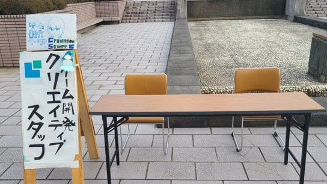

更新日： 2023年 4月 10日
23年新入生歓迎会の記録

新入生の皆様、改めましてご入学おめでとうございます!! こんにちは、こんばんは、クリエイティブスタッフです。 私達のサークルは本学で先日行われた新入生歓迎会にて、サークル説明及び質疑応答、ゲームの配布、ゲームの体験プレーを行いました。 大変多くの新入生の方々に興味を持っていただけとこと大変嬉しく思います。 訪れてくれた方々、本当にありがとうございました。ここで一つお知らせです。
私達のサークルは今月のまたね